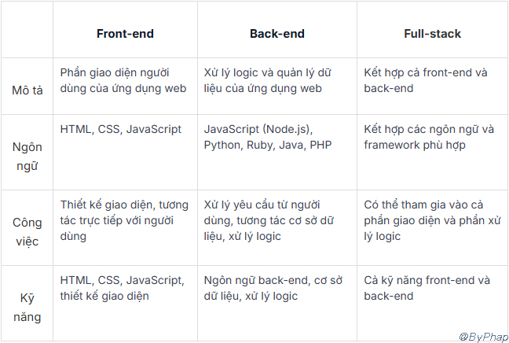

Lập trình front-end ngày càng trở thành một ngành nghề hấp dẫn và được săn đón nhiều trong lĩnh vực tuyển dụng, chủ yếu bởi những mức lương hấp dẫn mà nó mang lại. Bên cạnh đó, ngày càng có nhiều thanh niên trẻ đang lựa chọn front-end như một cơ hội để tiếp cận với lĩnh vực lập trình chuyên nghiệp.
⚡ 1.Front End là gì?
✍ Frontend là phần tương tác trực tiếp với người dùng trên một trang web. Khi bạn duyệt web, mọi yếu tố từ màu sắc, kiểu chữ, thanh cuộn, và menu thả xuống đều được tạo ra bởi sự kết hợp của CSS, HTML và JavaScript, và được điều khiển bởi trình duyệt web bạn đang sử dụng trên máy tính.
✍ Một lập trình viên Front End Web là người tập trung vào phát triển phần xây dựng giao diện website tĩnh và tạo ra trải nghiệm cho người dùng. Nói một cách khác, Front End Developer tập trung vào việc phát triển phía máy khách (Client Side) của ứng dụng web.
.jpg)
⚡ 2.Front End học gì? Muốn làm Front End cần học những gì?
👉 “Front End học gì”, “Muốn làm Front End cần học những gì” là câu hỏi lớn nhất của tất cả các bạn trẻ đang quan tâm và muốn bước chân vào nghề lập trình viên front end. Muốn biết được front end developer cần học gì, lập trình front end cần học những gì thì trước tiên chúng ta cần hiểu về yêu cầu công việc của họ.
📋 Các công việc chính của một nhân viên lập trình front-end bao gồm:
📋 Vậy Front End học gì? Muốn làm Front End cần học những kỹ năng gì?
-Tất cả các lập trình viên Front End Web đều cần có kiến thức và nắm vững ba ngôn ngữ lập trình chính là CSS, HTML và JavaScript. Để học Front End, bạn cũng cần làm quen với nhiều framework như Foundation, Bootstrap, Angular JS và sử dụng các thư viện như LESS, jQuery của JavaScript.
⚡ 1. Hiểu biết HTML và CSS
-Để bắt đầu học lập trình Front End, hai ngôn ngữ cơ bản mà bạn cần nắm vững là HTML (Hypertext Markup Language) và CSS (Cascading Style Sheets). Đây là hai ngôn ngữ quan trọng để thiết kế giao diện trang web.
⚡ 2. Kỹ năng JavaScript
-Bên cạnh đó, JavaScript đóng vai trò quan trọng trong việc tạo sự tương tác giữa giao diện trang web và người dùng. JavaScript, cùng với CSS và HTML, là những yếu tố không thể thiếu trong quá trình xây dựng một trang web.
⚡ 3. Nắm bắt jQuery
-Frontend phải sử dụng nhiều hiệu ứng và thường xuyên giao tiếp với máy chủ thông qua JavaScript. Điều này thường dẫn đến việc mã JavaScript có thể trở nên rất dài.
-jQuery là một thư viện ngôn ngữ lập trình JavaScript giúp cung cấp các hiệu ứng và cách xử lý chỉ với một số dòng lệnh đơn giản.
Thư viện này giúp xây dựng chức năng bằng JavaScript nhanh chóng và dễ dàng hơn rất nhiều.
⚡ 4. Hiểu biết về Javascript frameworks
-Framework là một cấu trúc kiểm soát luồng dữ liệu trong ứng dụng. Hiện nay, có nhiều framework JavaScript như Ember, AngularJS, ReactJS, Backbone…
-Việc thành thạo sử dụng những “bộ khung” này sẽ giúp bạn biết cách sắp xếp mọi thứ trong ứng dụng cũng như các chức năng cơ bản để ứng dụng hoạt động. Đây cũng là những framework Frontend mà bạn cần ghi nhớ khi học lập trình Front End.
⚡ 5. Kinh nghiệm dùng CSS Preprocessors
-CSS Preprocessors (Ngôn ngữ tiền xử lý CSS) có vai trò tổ chức và thực hiện logic hóa các đoạn mã CSS để đưa chúng gần hơn với một ngôn ngữ lập trình.
-Việc sử dụng CSS Preprocessors giúp tiết kiệm thời gian viết code, bảo trì và phát triển CSS một cách dễ dàng. Đồng thời, nó giúp tổ chức tập tin CSS một cách rõ ràng hơn.
Hiện tại, LESS và SASS là hai Preprocessors phổ biến được sử dụng nhiều nhất.

⚡ 6. Thiết kế Mobile và Responsive
-Không chỉ giới trẻ, hầu hết mọi thế hệ ngày nay đều truy cập Internet thông qua thiết bị di động nhiều hơn là trên máy tính để bàn. Vì vậy, kỹ năng thiết kế giao diện trên di động đóng vai trò quan trọng nếu bạn muốn trở thành một lập trình viên Frontend xuất sắc.
-Bên cạnh đó, hiểu biết về responsive design sẽ giúp bạn xây dựng các trang web tương thích với nhiều loại thiết bị điện tử và kích cỡ hiển thị đa dạng.
⚡ 7. Sử dụng hệ thống quản lý nội dung (CMS)
-CMS (Content Management System – Hệ thống quản lý nội dung) là một công cụ mà không chỉ lập trình viên, mà cả biên tập viên website và nhà văn nội dung đều sử dụng để làm việc. Đa số các trang web ngày nay được xây dựng trên các hệ thống phổ biến như Magento, WordPress và Drupal. Để nắm vững công việc, bạn nên làm quen và trở thành thành thạo trong việc làm việc với các hệ thống CMS này.
⚡ 8. Kỹ năng xử lý vấn đề
-Bên cạnh việc nắm vững các ngôn ngữ lập trình, bạn cũng nên biết cách thực hiện và triển khai thiết kế, cũng như cách sửa lỗi và nhận diện mã code frontend và backend. -Sự linh hoạt và thông minh trong việc giải quyết vấn đề là một trong những yếu tố quan trọng nếu bạn muốn trở thành một lập trình viên frontend giỏi.
⚡ 9. Kiến thức về UI/UX
-Khi học lập trình front end, hai yếu tố quan trọng không thể thiếu là UI (User Interface – giao diện người dùng) và UX (User Experience – trải nghiệm người dùng). Trong đó, UI liên quan đến thiết kế giao diện hấp dẫn và trực quan, trong khi UX liên quan đến nghiên cứu cách người dùng tương tác với trang web. Nhờ đó, bạn có thể nhận ra những thay đổi cần thiết và tiến hành thử nghiệm để cải thiện sự phát triển của trang web.
Front-end, back-end và full-stack là các thuật ngữ thường được sử dụng để mô tả các phần của một ứng dụng web. Front-end tập trung vào giao diện người dùng và tương tác trực tiếp với người dùng, back-end là tập trung vào xử lý logic và quản lý dữ liệu, trong khi đó full-stack là một người phát triển có thể làm việc trên cả front-end và back-end.
Cơ hội việc làm Front end ở Việt Nam có nhiều không?
📢 Hiện nay, lĩnh vực phát triển Front end đang bùng nổ và trở thành một trong những ngành có nhiều tiềm năng và cơ hội việc làm rộng mở.
📢 Sự phổ biến của Internet và nhu cầu ngày càng cao về trải nghiệm người dùng tốt đã khiến cho vai trò của Front end trở nên quan trọng hơn bao giờ hết. Doanh nghiệp và tổ chức đều đầu tư vào việc phát triển giao diện người dùng tích cực, thân thiện và dễ sử dụng để tạo ra trải nghiệm độc đáo cho khách hàng.
📢 Đồng thời, sự xuất hiện của các Framework và thư viện Front end như React, Angular, và Vue.js đã góp phần giảm bớt độ phức tạp và tăng tốc độ quá trình phát triển, mở ra nhiều cơ hội mới cho những người làm Front end.

Front end là một lĩnh vực quan trọng trong phát triển web, chịu trách nhiệm về giao diện người dùng và trải nghiệm người dùng. Những người làm Front end sử dụng HTML để định nghĩa cấu trúc của trang web, CSS để thiết lập giao diện và kiểu dáng, cùng với JavaScript để tạo ra những trang web động và có khả năng tương tác.
Cuối cùng, Front end không chỉ là nơi bắt đầu cho những người mới trong lĩnh vực phát triển web, mà còn là một lĩnh vực đầy tiềm năng và quan trọng trong việc xây dựng những trang web và ứng dụng đẳng cấp.
Bạn thấy bài viết hay và hữu ích? Đừng ngại Share với bạn bè và đồng nghiệp nhé!